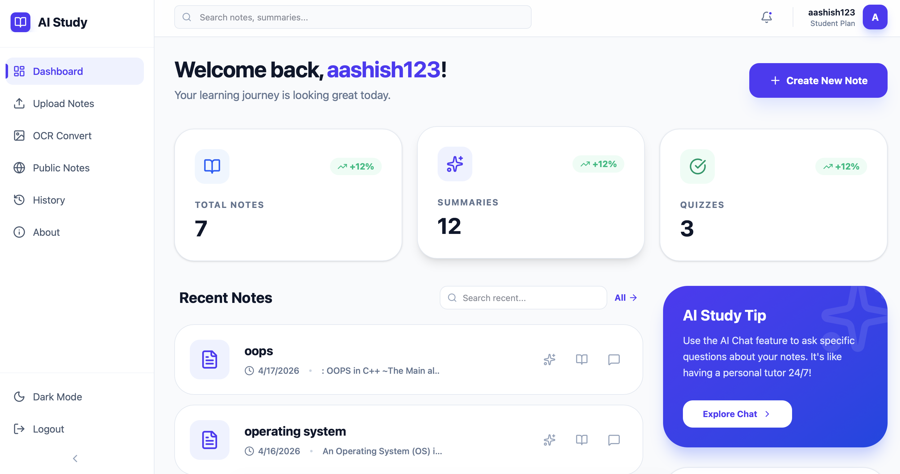
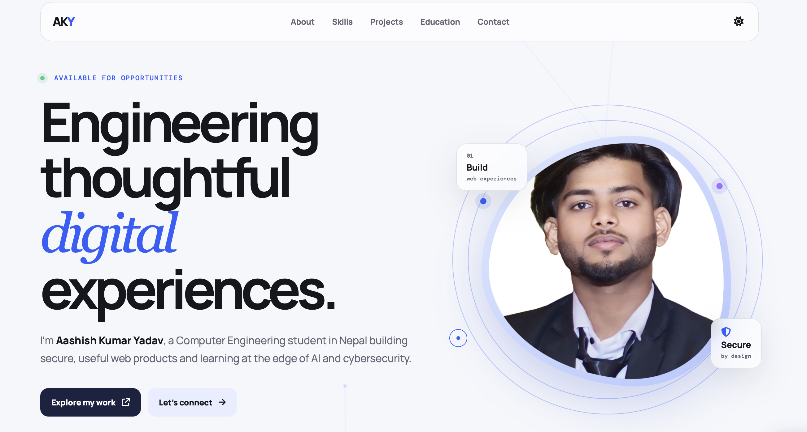
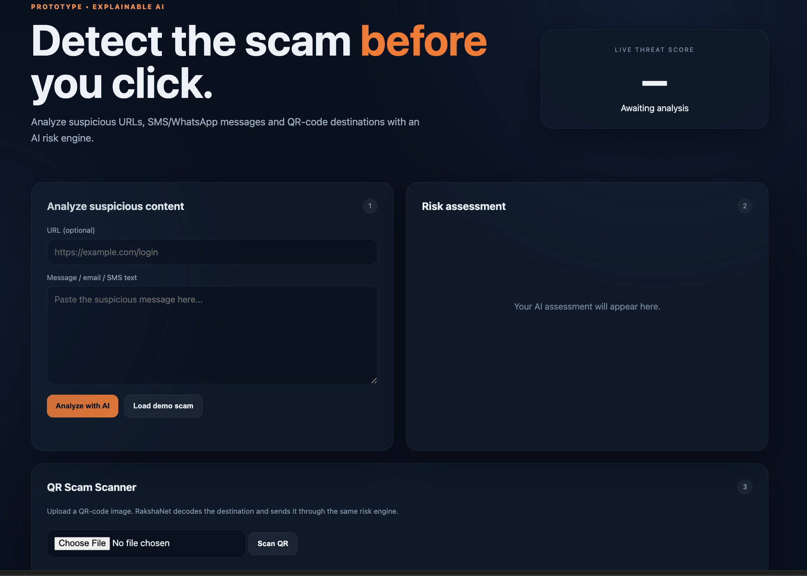

Frontend
HTML · CSS · JavaScript95%
Available for opportunities
I’m Aashish Kumar Yadav, a Computer Engineering student in Nepal building secure, useful web products and learning at the edge of AI and cybersecurity.
01 — Profile
I combine engineering fundamentals with a sharp eye for interfaces. My focus is on turning complex problems into simple, reliable experiences that people enjoy using.
02 — Capabilities
Always learning, always building. These are the technologies I’m most comfortable putting to work.
03 — Selected work

Featured01 / EDUCATION
Study workspace concept combining OCR, smart notes, PDF upload, authentication, and an admin dashboard.
Discuss this project
Live02 / WEB
A responsive, high-performance portfolio that presents work clearly and makes it easy to get in touch.
View experience
In progress03 / SECURITY
A hands-on environment for exploring Linux, networks, ethical hacking, and web-security practices.
Ask about it05 — Journey
2024 — Present
Ongoing
06 — Credentials
Click a certificate to view it in full.
07 — Contact
Have an internship, collaboration, or interesting problem in mind? I’d love to hear from you.
Connect on LinkedIn